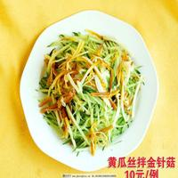

<!--
  Generated template for the FoodsPage page.

  See http://ionicframework.com/docs/components/#navigation for more info on
  Ionic pages and navigation.
-->
<ion-header style="background-color: #2c9aea;">

  <!--<ion-navbar>-->
  <ion-grid>
    <ion-row>
      <ion-col col-4>
        <button (click)="disMiss()" style="font-size: 20px;background-color: transparent;color: white">
          <ion-icon name="ios-arrow-back"></ion-icon>
        </button>
      </ion-col>
      <ion-col col-4 id="shoptitle">四川火锅</ion-col>
      <ion-col col-4></ion-col>
      <!--</ion-navbar>-->
    </ion-row>
  </ion-grid>
</ion-header>


<ion-content>
  <ion-row >
    <ion-col col-12 style="padding: 0;margin: 0">
  </ion-col>
  </ion-row>
  <ion-list no-lines>
  <ion-item>
   <p>电饭锅速度规范代购代购互粉刚好符合经过警方估计</p>
    <h2 style="margin-top: 20px">四川火锅</h2>
    <p style="margin-top: 10px">评分</p>
    <p style="margin-top: 10px">

      <span >月售 <span>824</span>单 </span>
      <span style="color: orangered;margin-left: 20px">售价 ¥20</span>
      <span style="color: orangered;">起</span>

    </p>
    <p style="margin-top: 10px">
      <span>评论数  98</span>
      <span style="margin-left: 20px">好评率  79%</span>
    </p>
  </ion-item>
  </ion-list>
</ion-content>
